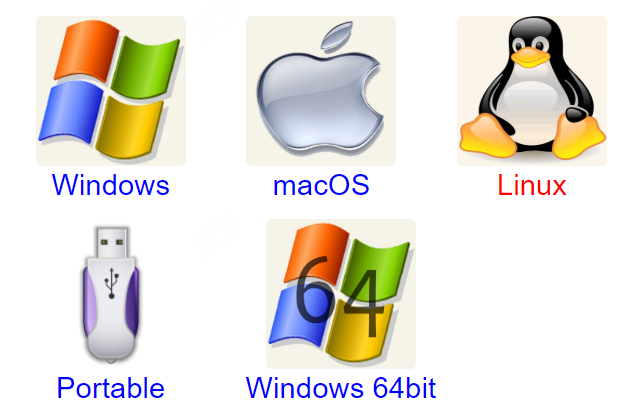

新版的gitbook，官方已经不支持导出pdf等电子书格式，官方的解读如下：
PDF and other ebook formats exports ？ The new version of GitBook no longer supports exporting to PDF and other ebooks format. A lot of rich-content does not translate well from the Web to PDF. GitBook will expose a developer API for people to consume and extend their content. It is not excluded that someone build a PDF export tool using the API, but it will not be officially supported. See the section about offline access if this is the part you cared about.
安装ebook-convert
生成电子书 (epub, mobi, pdf) 时需要ebook-convert。 比较常用的 convert 有 calibre。
安装calibre
calibre 官网: https://calibre-ebook.com
下载地址：http://calibre-ebook.com/download

Linux
sudo apt install calibre
Mac
下载 Calibre.app。移动 calibre.app 到你的应用程序文件夹中后，给 ebook-convert 工具创建一个符号链接。
$ sudo ln -s ~/Applications/calibre.app/Contents/MacOS/ebook-convert /usr/bin
你可以把 /usr/bin 替换为 $PATH 中的任何的文件夹。
Windows
安装 calibre-4.5.0.msi 到本机环境，如果选择了默认配置，不需要配置环境变量。
ebook-convert –version
D:\gitbook>ebook-convert --version
ebook-convert.exe (calibre 4.5.0)
Created by: Kovid Goyal <kovid@kovidgoyal.net>
有输出版本证明安装成功。
配置 pdf
可以使用 book.json 中的一组选项来定制PDF输出：
| 参数名 | 描述 |
|---|---|
| pdf.pageNumbers | 将页码添加到每个页面的底部（默认为 true） |
| pdf.fontSize | 基本字体大小（默认是 12） |
| pdf.fontFamily | 基本字体样式（默认是 Arial） |
| pdf.paperSize | 页面尺寸，选项有： 'a0', 'a1', 'a2', 'a3', 'a4', 'a5', 'a6', 'b0', 'b1', 'b2', 'b3', 'b4', 'b5', 'b6', 'legal', 'letter' （默认值是 a4） |
| pdf.margin.top | 上边界（默认值是 56） |
| pdf.margin.bottom | 下边界（默认值是 56） |
| pdf.margin.right | 右边界（默认值是 62） |
| pdf.margin.left | 左边界（默认值是 62） |
生成电子书
gitbook pdf <gitbook-folder-location> <pdf-location>.pdf
你当前看的文档是利用 GitBook 解析的基于 Markdown 文件的 html版本，"下载pdf"按钮提供的 pdf 也是由 GitBook 生成的。
电子书https://docs.poppy-project.org/en/# 左上角有一个下面 pdf 的标志。
D:\gitbook>gitbook pdf
info: 24 plugins are installed
info: 7 explicitly listed
info: loading plugin "splitter"... OK
info: loading plugin "highlight"... OK
info: loading plugin "search"... OK
info: loading plugin "lunr"... OK
info: loading plugin "sharing"... OK
info: loading plugin "fontsettings"... OK
info: loading plugin "theme-default"... OK
info: found 80 pages
info: found 89 asset files
warn: "this.generator" property is deprecated, use "this.output.name" instead
warn: "navigation" property is deprecated
warn: "book" property is deprecated, use "this" directly instead
warn: "options" property is deprecated, use config.get(key) instead
info: >> generation finished with success in 50.6s !
info: >> 1 file(s) generated
然后在当前文件下，就会发现新的文件生成：
book.pdf